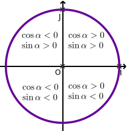
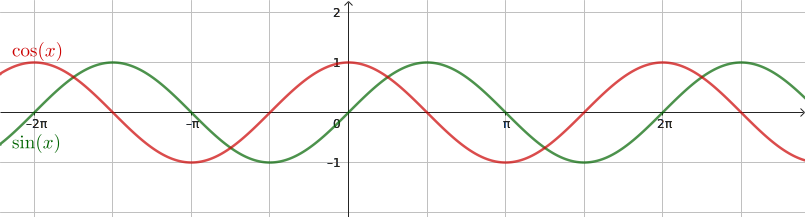
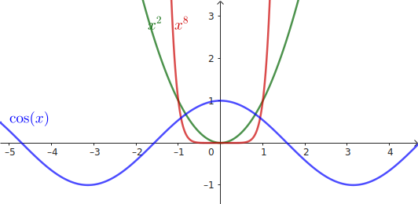
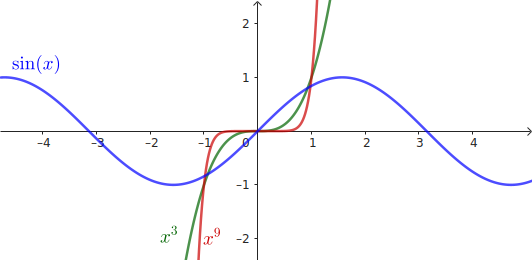
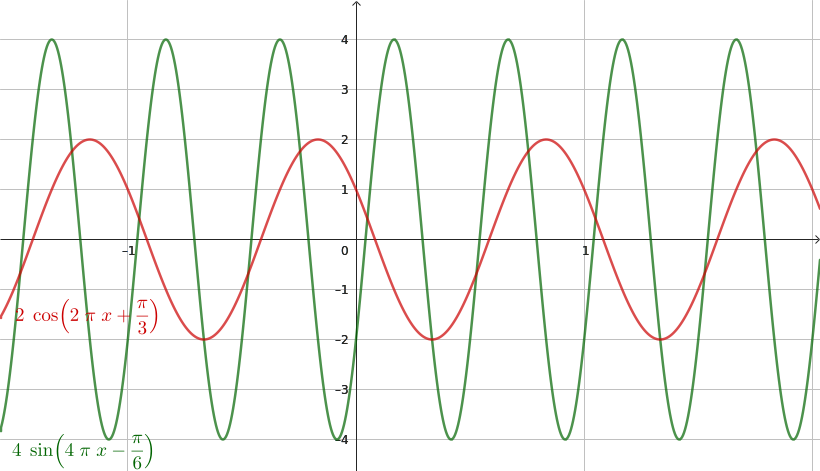
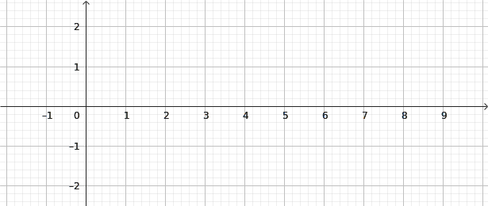
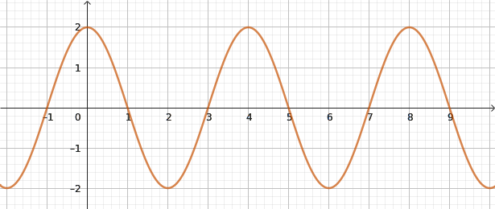
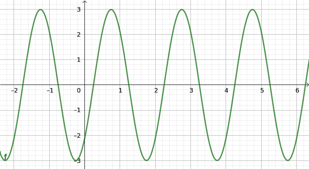
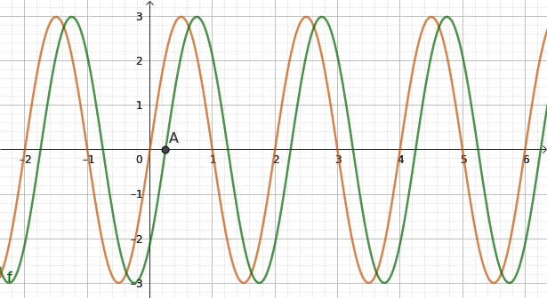

\(\cos\) et \(\sin\) étant \(2\pi\)-périodiques, on les étudie sur une période :
\(\left]-\pi;\pi\right]\).
Signe
Compléter les tableaux de signe de cosinus et sinus :
\(x\)
\(-π\)
\(\frac{-π}{2}\)
\(0\)
\(\frac{π}{2}\)
\(π\)
\(\cos(x)\)
\(-\)
\(0\)
\(+\)
\(0\)
\(-\)
\(x\)
\(-π\)
\(\frac{-π}{2}\)
\(0\)
\(\frac{π}{2}\)
\(π\)
\(\sin(x)\)
\(0\)
\(-\)
\(0\)
\(+\)
\(0\)

Variations

Compléter les tableaux de variations de cosinus et sinus :
\(x\)
\(-π\)
\(\frac{-π}{2}\)
\(0\)
\(\frac{π}{2}\)
\(π\)
\(1\)
↗
↘
\(\cos(x)\)
\(0\)
\(0\)
↗
↘
\(-1\)
\(-1\)
\(x\)
\(-π\)
\(\frac{-π}{2}\)
\(0\)
\(\frac{π}{2}\)
\(π\)
\(1\)
↗
↘
\(\sin(x)\)
\(0\)
\(0\)
\(0\)
↘
↗
\(-1\)
Quel est le nombre de points d'intersection des courbes représentant les fonctions \(\cos\) et
\(\sin\) sur l'intervalle \(\left[0;200\pi\right]\) ?
Pour \(\cos\) : 200 points ;
Pour \(\sin\) : 201 points ;
Parité
Fonctions paires
Une fonction \(f\) est paire lorsqu'elle est définie sur un ensemble de définition
\(\mathcal{D}_f\) symétrique par rapport à 0 (par exemple \([-1,5;1,5]\)) et vérifie les conditions
(équivalentes) suivantes :
pour tout \(x\in\mathcal{D}_f\), \(f(x)=f(-x)\).
la courbe de \(f\) est symétrique par rapport à l'axe vertical \((Oy)\).

les fonctions définies par :
\(x^n\) avec \(n\) entier pair et \(\cos(x)\)
sont des fonctions paires.
Fonctions impaires
Une fonction \(f\) est impaire lorsqu'elle est définie sur un ensemble de
définition
\(\mathcal{D}_f\) symétrique par rapport à 0 (par exemple \([-1,5;1,5]\)) et vérifie les
conditions
(équivalentes) suivantes :
pour tout \(x\in\mathcal{D}_f\), \(f(x)=-f(-x)\).
la courbe de \(f\) est symétrique par rapport au centre du repère.

les fonctions définies par :
\(x^n\) avec \(n\) entier impair, \(\sin(x)\), la fonction inverse, et \(\tan(x)\)
sont des fonctions impaires.
Donner un exemple de fonction ni paire ni impaire
\(f(x)=x+1\), par exemple.
On note \(f\) une fonction définie sur \(\mathbb{R}\). On pose \(p(x)=\dfrac{f(x)+f(-x)}{2}\). Montrer que \(p\) est une fonction paire.
On a \(p(-x)=p(x)\).
On pose \(i(x)=\dfrac{f(x)-f(-x)}{2}\). Montrer que \(i\) est une fonction impaire.
On a \(i(-x)=-i(x)\).
En déduire que \(f\) est la somme d'une fonction paire et d'une fonction impaire.
On a en effet, après calcul \(f(x)=p(x)+i(x)\).
Moralité : une fonction qui n'est ni paire ni impaire est quand même la somme d'une fonction paire et d'une fonction impaire.
Signal sinosoïdal
Paramètres : période, pulsation, fréquence et phase à l'origine
Une fonction du temps de la forme \(f(t)=A\cos\left(\omega
t+\varphi\right)\) ou
\(g(t)=A\sin\left(\omega t+\varphi\right)\) s'appelle signal sinusoïdal
d'amplitude ou bien valeur max
\(A\),
de
pulsation \(\omega\) et de phase à l'origine \(\varphi\).
Le graphe du signal est le même que les fonctions \(\sin\) et \(\cos\) vues
précedemment, mais
il
oscille
entre
les valeurs \(\pm A\) au lieu de \(\pm1\) et sa période n'est plus forcément \(2\pi\) :
On a \(\omega=\dfrac{2\pi}{T}=2\pi F\) où :
\(T\) est la période (un temps, généralement en seconde dans le système international) ;
\(F=\dfrac{1}{T}\) est la fréquence (généralement en hertz : Hz) ;
\(\omega = \dfrac{2\pi}{T} = 2\pi F\) est la pulsation (généralement en radians par seconde : rad/s).
\(f(x)=2\cos\left(2\pi x+\frac{\pi}{3}\right)\) et \(g(x)=4\sin\left(4\pi
x-\frac{\pi}{6}\right)\)
:

Identifier sur l'écriture du signal l'amplitude, la pulsation et la phase à
l'origine des deux
signaux
ci-dessus. En déduire leur périodes et leurs fréquences
Pour le signal en rouge :
Le signal oscille entre -2 et 2 donc son amplitude est de 2.
On lit \(\varphi=\frac{\pi}{3}\) et \(\omega = 2\pi\) ; on calcule \(T=\frac{2\pi}{\omega}=\frac{2\pi}{2\pi}=1\). On a aussi \(F=\frac{1}{T}=\frac{1}{1}=1\)
Pour le signal en vert :
Le signal oscille entre -4 et 4 donc son amplitude est de 4.
On lit \(\varphi=\frac{-\pi}{6}\) et \(\omega = 4\pi\) ; on calcule \(T=\frac{2\pi}{\omega}=\frac{2\pi}{4\pi}=\frac{1}{2}=0{,}5\). On a aussi \(F=\frac{1}{T}=\frac{1}{0{,}5}=2\)
Tracer sur \(\left[-2;10\right]\) le signal sinusoïdal
\(h(t)=2\cos\left(\frac{\pi}{2}t\right)\). Commencer par calculer la période.


Utiliser : pulsation, période, fréquence
Pour déterminer la pulsation et la fréquence à partir d'un graphique :
on détermine la longueur minimale du motif qui se répète sur la courbe du signal ;
on en déduit \(\omega\) et \(F\) par le calcul : \(\omega = \dfrac{2\pi}{T}\) et \(F=\dfrac{1}{T}\).
En général, on laisse \(\omega\) en valeur exacte (avec des \(\pi\)) lorsque c'est possible.
Déterminer à partir du graphique la période, la pulsation et la fréquence de ce signal, ainsi que son amplitude \(A\).

Le signal oscille entre -3 et 3 donc \(A=3\).
On lit \(T=2\) sur la courbe donc \(\omega = \frac{2\pi}{T}=\pi\) ; on calcule \(F=\frac{1}{T}=\frac{1}{2}=0{,}5\).
Utiliser : phase à l'origine
La phase à l'origine introduit un décalage horizontal (dans le temps) du signal. C'est un angle, exprimé en degrés ou radians.
Le signal rouge est de la même forme qu'un sinus (il s'annule en 0). En mesurant sa période et son amplitude, on sait qu'il s'écrit \(g(t)=3\sin(\pi t)\).

Le signal vert \(f\) est la même signal que \(g\) mais décalé dans le temps (déphasé).
Il s'écrit donc \(f(t)=3\sin(\pi t+\varphi)\). Comment trouver \(\varphi\) ?
On mesure le décalage horizontal \(\Delta t\) (ici 0,25) qui correspond à l'abscisse du point A sur le schéma.
Pour obtenir le signe de \(\varphi\) :
On se décale vers la droite (comme sur le schéma) : signe moins - ;
On se décale vers la gauche : signe plus - ;
On effectue une règle de proportionalité pour obtenir une valeur angulaire : en effet, un tour complet (\(2\pi\)) correspond à une période \(T\) :
temps
angle
\(T=2\)
\(2\pi=360^\circ\)
\(\Delta t=0{,}25\)
\(\varphi = ???\)
Donc \(\varphi = \textrm{[Signe]} \Delta t \times \dfrac{2\pi}{T}=- \omega\Delta t = -\pi\times 0{,}25 = \dfrac{-\pi}{4} \)
On écrit le signal : \(f(t)=3\sin\left(\pi t-\frac{\pi}{4}\right)\)
Écrire ce signal \(f\) sous la forme \(A\cos\left(\omega t + \varphi\right)\). On mesure le décalage horizontal jusqu'au premier maximum de \(f\), un cosinus (non déphasé) présentant un max en zéro.
On trouve alors \(\Delta t = 0{,}75\), ce qui en suivant les mêmes calculs donne \(\varphi = -\pi \times 0{,}75=\dfrac{-3\pi}{4}\), donc \(f(t)=3\cos\left(\pi t - \frac{3\pi}{4}\right)\)
Activité de découverte
On se place dans un repère orthonormé \((O;I;J)\) et dans le cercle
trigonométrique
associé.
On considère une horloge analogique tracée sur ce cercle trigonométrique, munie
d'une petite
aiguille
\(\overrightarrow{OP}\) de norme \(\frac{3}{4}\) et d'une grande aiguille
\(\overrightarrow{OG}\)
de
norme \(1\). Le fonctionnement de cette horloge à la fois esthétique et précise est
conventionnel ;
et
assuré
par des piles en bon état de marche.
On note \(t\) le temps, en heures, et on considère une journée
\(\mathcal{D}=\left[0;24\right[\).
Faire une figure ; on insistera sur l'aspect esthétique de l'horloge.
Vérifier que pour tout \(t\in \mathcal{D}\), on a :
\(
\widehat{\left(\overrightarrow{OJ};\overrightarrow{OG}\right)}\equiv-2\pi
t\pmod{2\pi}
\) et \(
\widehat{\left(\overrightarrow{OJ};\overrightarrow{OP}\right)}\equiv\frac{-2\pi}{12}
t\pmod{2\pi}
\)
Il est 11h12. Quel est l'angle aigu formé par les deux aiguilles ?
À quelle heure de la journée les deux aiguilles sont-elles symétriques par
rapport à (Ox) ?
À quelle heure de la journée les deux aiguilles sont-elles symétriques par
rapport à
\((Oy)\) ?
À quelle heure de la journée les deux aiguilles sont-elles colinéaires ? De
même sens ?
De
sens
opposé
?
À quelle heure de la journée les deux aiguilles sont-elles orthogonales ?